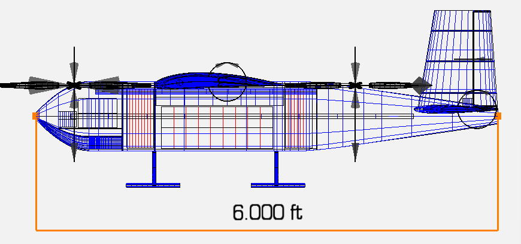
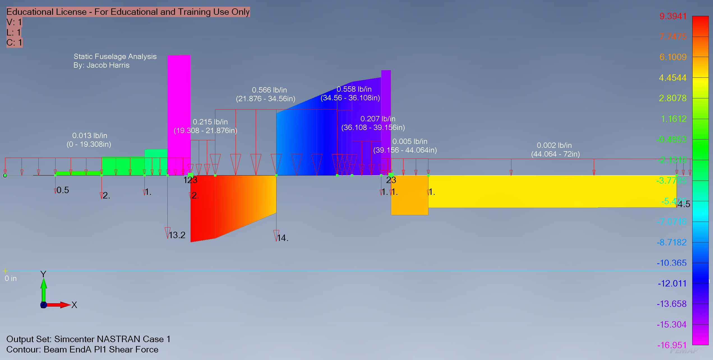

AEROSPACE ENGINEERING / PROJECT
Maelstrom eVTOL
eVTOL structural analysis · supplied TMAD materials

eVTOL · workbook CAD viewOverview & objectives
The supplied TMAD eVTOL workbook investigates fuselage and wing static loads, component weight and balance, and structural stress. The workbook does not explicitly name Maelstrom; its association with this portfolio project remains to be confirmed.
Responsibilities & contributions
Jacob Harris is the sole editor of the TMAD eVTOL structural-analysis workbook. His documented workbook work covers load inputs, reaction forces, shear and bending calculations, and margins-of-safety studies. The embedded static-fuselage analysis plot is also credited to Jacob Harris.
Aircraft design & specifications
An embedded side-view CAD drawing shows the fuselage arrangement, propulsion locations, landing gear, and internal bays. Final aircraft dimensions, performance, and configuration status have not been established for this page.
Engineering methods & analysis
The workbook contains point and distributed loads, support reactions, shear force and bending moment calculations, bending and shear stresses, and margins of safety. It includes static loading, a 3G hard-landing case, and a 3G coordinated-turn case.
CAD models & technical imagery
The side-view CAD drawing and static-fuselage shear-force plot below are extracted unchanged from the supplied workbook. The analysis plot identifies a Simcenter NASTRAN output set and retains its original annotations.
Results & accomplishments
The materials document load-path and structural sizing studies, including margins-of-safety calculations. No whole-aircraft pass claim, flight-test result, or final performance claim is made here; model assumptions and result validation need further review.
